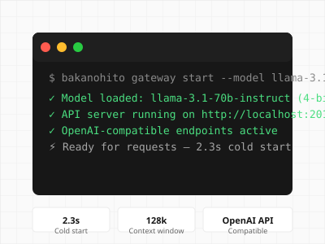

Production
v2.3.0 • Released Q3 2023
Local AI Gateway
Unified gateway for running local LLMs with OpenAI-compatible API. Supports Ollama, llama.cpp, vLLM, and custom GGUF models. Deploy on-prem or in your VPC.
- Multi-Model SupportOllama, llama.cpp, vLLM, TGI, custom GGUF/Safetensors
- OpenAI-CompatibleDrop-in replacement for OpenAI SDK — works with Vercel AI SDK, LangChain, 100+ tools
- Model RoutingIntelligent routing by task, cost, latency — automatic fallback chains
- Auth & ObservabilityAPI keys, rate limiting, request logging, OpenTelemetry metrics
2.3s
Cold Start
128k
Context Window
3
Enterprise Deployments
100%
Uptime SLA